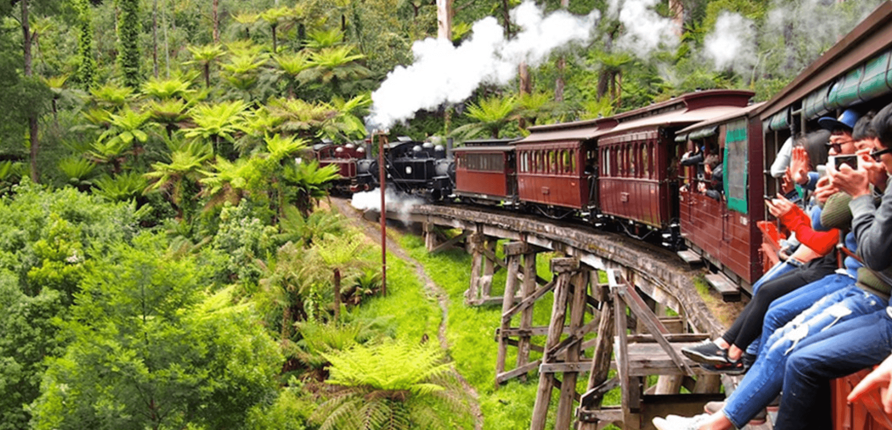
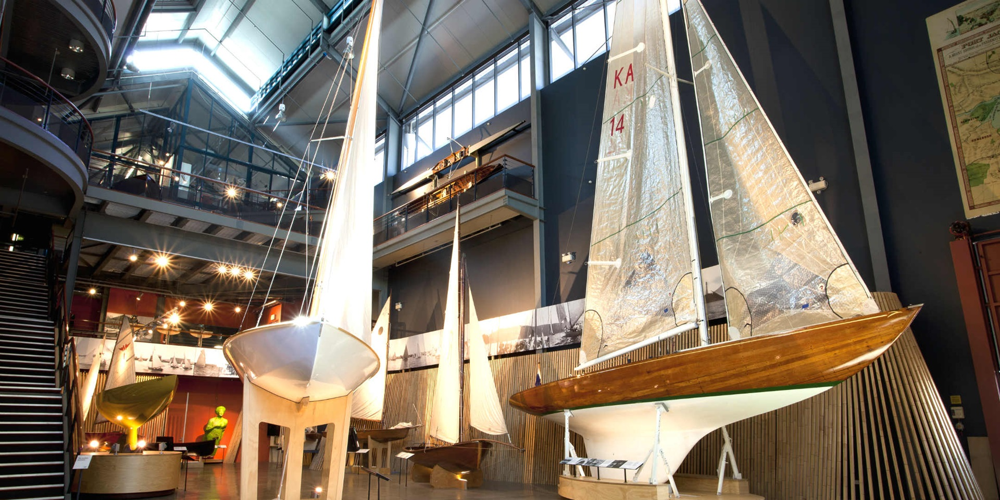

🄠December 23~24 - Arrival & Melbourne City
- Flight: 台北 âœˆï¸ 墨爾本
- Luggage: 23kg x 2
- December 23 - 11:45 pm - Taiwan to Melbourne

- 12:05 PM - Arrive at Melbourne T2
- Go to Airbnb, then city center for lunch (restaurant TBD)
- 5:00 PM - Visit different Melbourne spots
Victoria State Library

Melbourne Yarra River

Melbourne Skydeck

🅠December 25 - Christmas City Day
- 8:00 AM - Wake up, go to Degraves Pl and get brekky.
- Must try: Lune Croissanterie 🥐
- 10:00 AM - Visit St. Paul’s Cathedral (Stained Glass!)
- 11:00 AM - Bourke Street Mall shopping & lunch
- 4:00 PM - Melbourne Carlton Gareden
- 5:00 PM - Melbourne University Walk
- 6:30 PM - Dinner at Melbourne City & Early rest for tour Tomorrow
Coffee Lane Way

Lune Croissanterie
St. Paul’s Cathedral
Bourke Shopping center
Garden and Royal Exhibition Building
Melbourne University

🧠December 26 - Penguins & Train
- 10:30 AM - Depart from Grand Hyatt Melbourne
- 12:45 PM - Puffing Billy Steam Train ride
- 2:00 PM - Maru Koala & Animal Park
- 5:10 PM - Watch penguins at Flynns Beach
- 9:30 PM - Return to Melbourne
- Penguin Parade + Koala Park + Train (4388$) KKday Link
Stean Train
Penguins Return
🏞️ December 27 - 12 Apostles & National Park
- 7:30 AM - Depart from Melbourne head towards Torquay and Kennett River/li>
- 10:00 AM - Depart from Melbourne head towards Torquay and Kennett River/li>
Great ocean Road

- 12:30 AM - Lunch at Apollo Bay
- 1:30 PM - Walk around the Great Otway national park
- 4:00 PM - Visit the 12 Apostles Melbourne
- 5:30 PM - Sightseeing at the Loch Ard Gorge Attraction
- 6:30 PM - Return to Melbourne
- 12 Apostles + Otway National park + Loch Ard Gorge (2610$) KKday Link
Great Otway national park

Wild Koala

The Twelve Apostles

Loch Ard Gorge
December 28 - Flight to Sydney
- 7:00 AM - Depart from Melbourne Airport, Terminal Link

âœˆï¸ December 28 - Sydney Habour & Sydney Opera house
- 08:30 AM - Flight to Sydney
- 10:30 AM - Arrive at Sydney airport
- 11:30 AM - Lunch at Sydney Habour
- 1:30 PM - Walk around Sydney Opera house
- 3:30 PM - Sydney Aquarium
- 5:00 PM - Head towards Hyde park and Sydney Central
- 6:00 PM - Dinner and Shopping Time
Sydney Fish Market

Sydney Opera House

Sydney Aquarium
Hyde Park

🦘 December 29 - Taronga Zoo/Aquarium & Sydney Central
- 08:30 AM - Arrive at Taronga Zoo (ticket fee 950$, koala photo 290$)
- 11:30 AM - Lunch At Sydney Central
- 1:30 PM -
- 12:30 AM -
Tronga Zoo with Sydney Opera House
🦘 December 30 -
- 08:30 AM -
- 10:30 AM -
- 11:30 AM -
- 12:30 AM -
🦘 December 31 - Fireworks
- 08:30 AM -
- 10:30 AM -
- 11:30 AM -
- 12:30 AM -
🦘 January 1 - Blue mountain
- 08:30 AM -
- 10:30 AM -
- 11:30 AM -
- 12:30 AM -
🦘 January 2 - Oyster farm and Bondi Beach
- 08:30 AM -
- 10:30 AM -
- 11:30 AM -
- 12:30 AM -
🦘 January 3 - Flight back to Taiwan
- 08:30 AM -
- 10:30 AM -
- 11:30 AM -
- 12:30 AM -